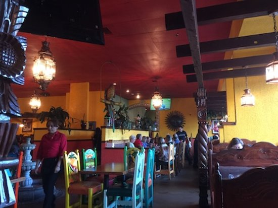

Three Margaritas
Authentic Mexican Restaurant
About Us
3 Margaritas has been named the best Mexican Restaurant and most popular restaurant in Fenton, MO for 6 years in a row by TripAdvisor. How do we do serve the best Mexican Food? By using freshly cut produce and by paying a higher premium for CAB (Certified Angus Black) meat cuts.
We pay significant premiums to use the highest quality ingredients on all of our dishes.
Try one of our famous Freshly Squeezed Margaritas made on the spot, our Angus Beef Fajitas, or our Enchiladas Suizas. Our extensive menu includes tacos, chimichangas, fajitas, nachos, quesadillas and Jarritos Mexican Sodas. We offer extremely fast delivery,
pickup and curbside ordering options.